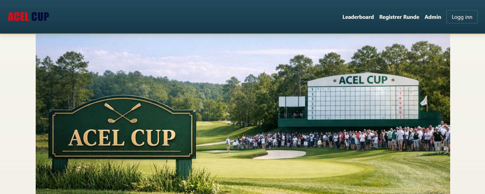
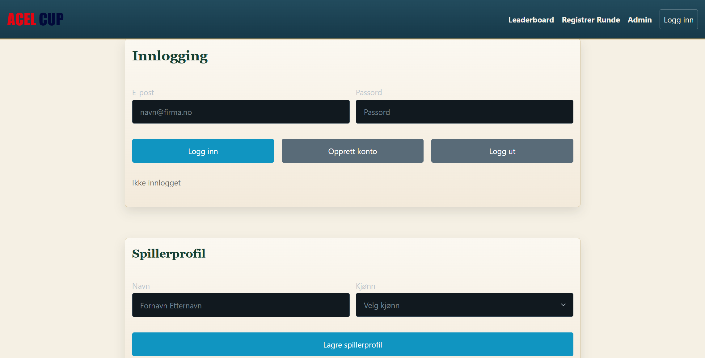
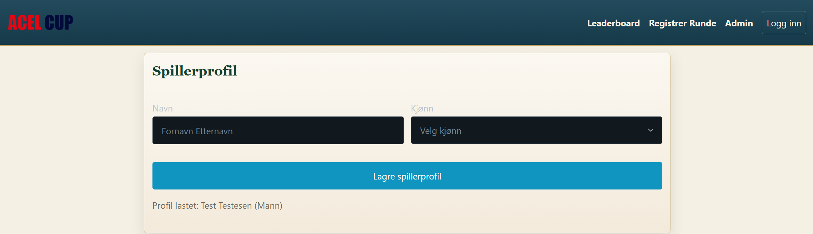
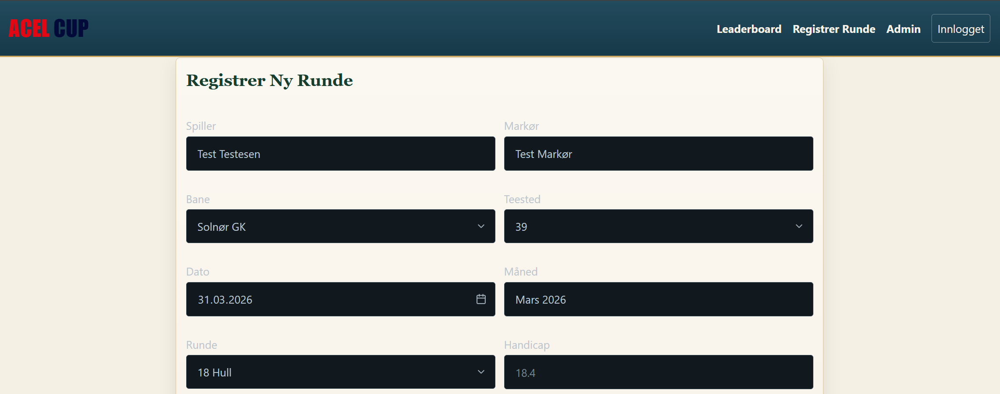
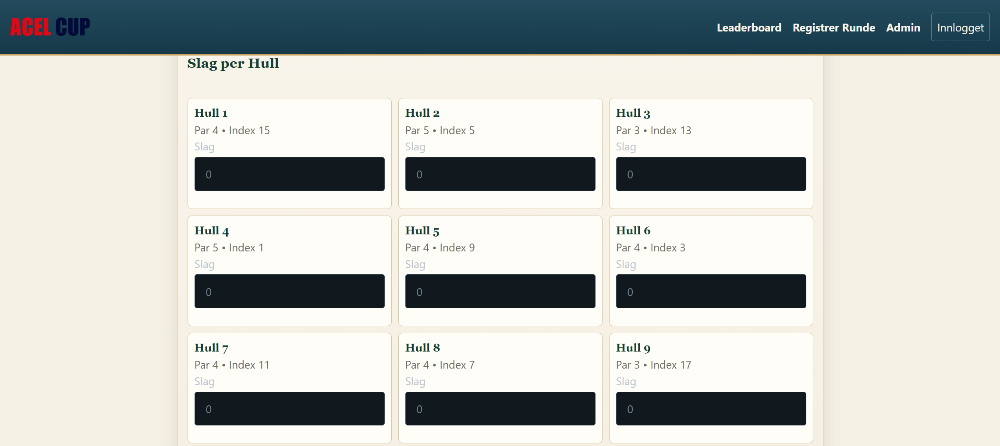

1
Trykk på Logg inn
Start på forsiden eller på registreringssiden, og trykk på knappen Logg inn øverst til høyre.

Her finner du en enkel guide til hvordan du oppretter bruker, lagrer spillerprofil og registrerer score i ACEL CUP.
Følg stegene under for å opprette konto, logge inn og lagre spillerprofil.
Start på forsiden eller på registreringssiden, og trykk på knappen Logg inn øverst til høyre.

Skriv inn e-postadressen din og velg et passord på minst 6 tegn.

Når e-post og passord er fylt inn, trykker du på Opprett konto.
Når kontoen er opprettet, bruker du samme e-post og passord og trykker Logg inn.
Etter innlogging fyller du inn navnet ditt i spillerprofilen.

Velg kjønn i nedtrekkslisten og trykk deretter på Lagre spillerprofil.
For å registrere en runde må du være innlogget og ha lagret spillerprofil.
Åpne siden Registrer Runde i menyen. Du må være innlogget for å kunne sende inn score.

Skriv inn navnet på markøren i feltet Markør.
Fyll ut alle feltene før du går videre til hullscore:
Under seksjonen Slag per Hull fyller du inn antall slag på hvert hull du har spilt.

Når alle felter og hullscorer er fylt ut, trykker du på Registrer Runde nederst på siden.